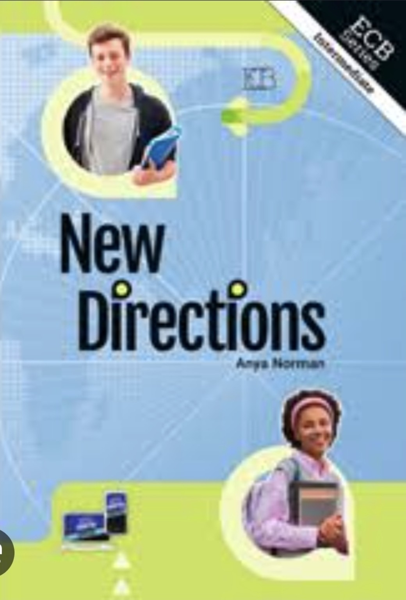
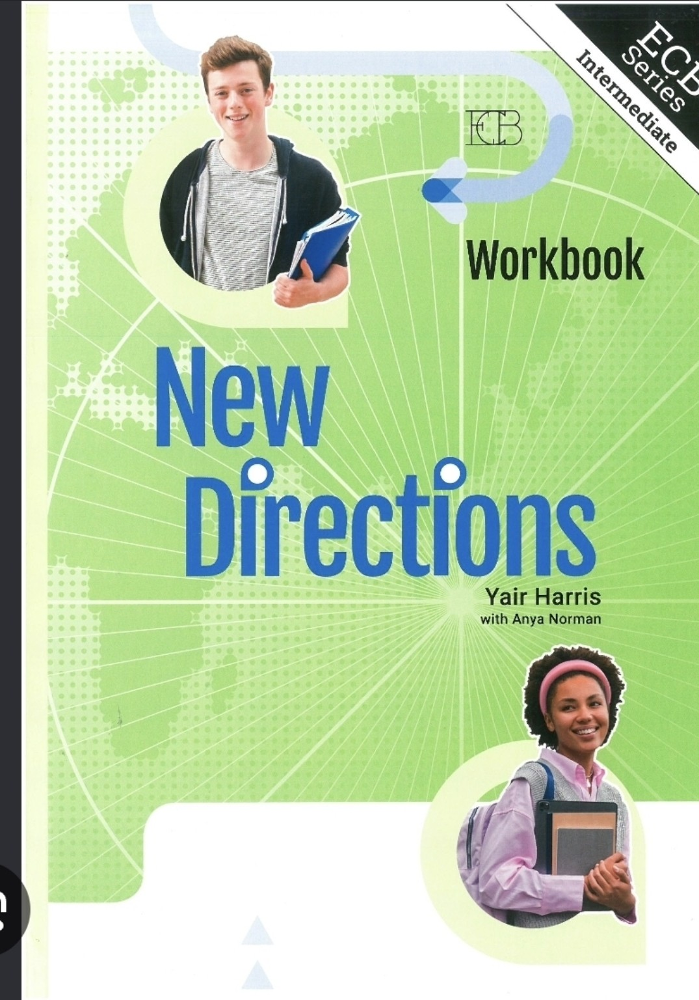

<!doctype html>
<html lang="he" dir="rtl">
<head>
  <meta charset="utf-8">
  <meta name="viewport" content="width=device-width,initial-scale=1,viewport-fit=cover">
  <title>New Directions — פתיחת השנה לכיתה ח׳</title>
  <meta name="description" content="מצגת פתיחת השנה לכיתה ח׳: ציוד, Band II Core I ואוצר המילים של קבוצה 01">
  <meta name="theme-color" content="#050b14">
  <style>
    @import url("https://fonts.googleapis.com/css2?family=Heebo:wght@500;600;700;800;900&family=Nunito:wght@600;700;800;900&display=swap");
    :root{--bg:#050b14;--panel:#101f35;--ink:#f7fbff;--muted:#a9bdd2;--cyan:#4ee5ff;--gold:#ffc857;--lime:#dfff5b;--line:#ffffff24}
    *{box-sizing:border-box}
    html,body{margin:0;width:100%;height:100%;overflow:hidden;background:var(--bg);color:var(--ink);font-family:"Heebo",Arial,sans-serif}
    body:before{content:"";position:fixed;inset:0;background:radial-gradient(circle at 14% 9%,#15375b 0,transparent 36%),radial-gradient(circle at 86% 86%,#29430f66 0,transparent 36%),linear-gradient(135deg,#07111f,#0b1729);pointer-events:none}
    body:after{content:"";position:fixed;inset:0;background:linear-gradient(#ffffff05 1px,transparent 1px),linear-gradient(90deg,#ffffff05 1px,transparent 1px);background-size:48px 48px;mask-image:linear-gradient(to bottom,#000,transparent 82%);pointer-events:none}
    button,a{-webkit-tap-highlight-color:transparent}
    .deck{height:100%;position:relative;z-index:1}
    .slide{position:absolute;inset:0;padding:5.5vh 6vw 9vh;display:none;align-items:center;justify-content:center;overflow:auto;overscroll-behavior:none}
    .slide.active{display:flex;animation:enter .32s ease-out}
    @keyframes enter{from{opacity:0;transform:translateY(16px)}to{opacity:1;transform:none}}
    .content{width:min(1180px,100%);margin:auto;text-align:center}
    .eyebrow{color:var(--cyan);font:900 clamp(13px,1.35vw,19px) "Nunito",Arial,sans-serif;letter-spacing:.15em;direction:ltr}
    .title{font-size:clamp(44px,7vw,96px);line-height:.98;letter-spacing:-.045em;margin:.12em 0;font-weight:900;text-wrap:balance}
    .subtitle{font-size:clamp(22px,2.7vw,38px);line-height:1.25;color:var(--muted);font-weight:750;margin:.5em auto 0;text-wrap:balance}
    .home{position:fixed;top:max(16px,env(safe-area-inset-top));left:max(18px,env(safe-area-inset-left));z-index:40;width:44px;height:44px;display:grid;place-items:center;color:#fff;text-decoration:none;background:#07111fbd;border:1px solid #ffffff2b;border-radius:13px;backdrop-filter:blur(12px)}
    .home:hover,.home:focus-visible{border-color:var(--cyan);outline:none}.home svg{width:22px;height:22px;fill:none;stroke:currentColor;stroke-width:2.2;stroke-linecap:round;stroke-linejoin:round}

    .equipment .content{width:min(1320px,100%)}
    .equipment-layout{display:grid;grid-template-columns:minmax(310px,.75fr) minmax(600px,1.25fr);gap:clamp(28px,4vw,64px);align-items:center}
    .equipment-copy{text-align:right}.equipment-copy .eyebrow{text-align:right}.equipment-title{direction:ltr;font:900 clamp(48px,6.4vw,92px)/.88 "Nunito",Arial,sans-serif;letter-spacing:-.06em;margin:.15em 0 .24em;color:#fff}.equipment-title span{color:var(--cyan)}
    .equipment-callout{font-size:clamp(24px,2.7vw,39px);line-height:1.25;font-weight:900;margin:0;color:var(--lime);text-wrap:balance}
    .covers{direction:ltr;display:flex;align-items:end;justify-content:center;gap:clamp(16px,2.5vw,34px)}
    .cover{margin:0;text-align:center}.cover img{display:block;height:min(64vh,650px);max-width:100%;object-fit:contain;border-radius:8px;box-shadow:0 28px 70px #000a,0 0 0 1px #ffffff18;background:#fff}.cover figcaption{margin-top:10px;color:#dce8f4;font:900 clamp(13px,1.25vw,17px) "Nunito",Arial,sans-serif;letter-spacing:.1em}

    .level{direction:ltr;font:900 clamp(76px,13vw,180px)/.85 "Nunito",Arial,sans-serif;letter-spacing:-.075em;margin:.14em 0;background:linear-gradient(90deg,var(--cyan),#fff 53%,var(--lime));-webkit-background-clip:text;background-clip:text;color:transparent}
    .target-line{display:flex;align-items:baseline;justify-content:center;gap:16px;direction:rtl;margin-top:3.5vh}.target-line strong{direction:ltr;color:var(--lime);font:900 clamp(46px,6.5vw,88px) "Nunito",Arial,sans-serif}.target-line span{font-size:clamp(23px,2.8vw,38px);font-weight:850}
    .group-track{max-width:990px;margin:3.8vh auto 0;direction:ltr;display:grid;grid-template-columns:repeat(20,1fr);gap:8px}
    .group-dot{aspect-ratio:1;border-radius:50%;border:2px solid #ffffff27;background:#ffffff0a;display:grid;place-items:center;color:#8093a8;font:800 clamp(9px,1vw,13px) "Nunito",Arial,sans-serif}.group-dot.goal{border-color:var(--lime);background:var(--lime);color:#07111f;box-shadow:0 0 18px #dfff5b33}
    .track-labels{max-width:990px;margin:9px auto 0;display:flex;justify-content:space-between;color:#91a6bc;font-size:14px;font-weight:800}.track-labels span:first-child{color:var(--lime)}

    .site-layout{display:grid;grid-template-columns:minmax(0,1fr) minmax(210px,300px);gap:clamp(30px,6vw,84px);align-items:center;text-align:right;max-width:1060px;margin:auto}
    .site-title{direction:ltr;text-align:left;font:900 clamp(58px,9vw,126px)/.86 "Nunito",Arial,sans-serif;letter-spacing:-.065em;margin:.16em 0;color:var(--cyan)}
    .site-copy{font-size:clamp(23px,2.8vw,38px);font-weight:850;margin:.5em 0 1.1em}.site-copy strong{color:var(--lime)}
    .site-link{display:inline-flex;align-items:center;justify-content:center;gap:12px;min-height:58px;padding:12px 24px;border-radius:18px;background:linear-gradient(135deg,var(--cyan),#8ef0da);color:#061018;text-decoration:none;font-size:clamp(18px,2vw,26px);font-weight:900;box-shadow:0 16px 42px #4ee5ff24;transition:.18s}.site-link:hover,.site-link:focus-visible{transform:translateY(-3px);outline:none;box-shadow:0 21px 50px #4ee5ff35}.site-link span{font-family:"Nunito",Arial,sans-serif;direction:ltr}
    .site-instruction{color:var(--muted);font-size:clamp(17px,1.8vw,24px);font-weight:700;margin:1.3em 0 0}
    .qr{margin:0;padding:18px;border-radius:26px;background:#fff;box-shadow:0 28px 75px #0009,0 0 0 1px #ffffff30}.qr img{display:block;width:100%;height:auto}.qr figcaption{color:#142033;text-align:center;font:900 14px "Nunito",Arial,sans-serif;margin-top:10px;direction:ltr}

    .vocab .content{width:min(1120px,100%);min-height:min(71vh,650px);display:flex;flex-direction:column;align-items:center;justify-content:center}
    .word-meta{position:absolute;top:3.2vh;right:4vw;color:#98acc1;font:900 clamp(12px,1.25vw,17px) "Nunito",Arial,sans-serif;letter-spacing:.12em;direction:ltr}
    .word{direction:ltr;font:900 clamp(58px,9.5vw,132px)/.92 "Nunito",Arial,sans-serif;letter-spacing:-.055em;color:var(--cyan);max-width:100%;overflow-wrap:anywhere;text-wrap:balance}
    .word.long{font-size:clamp(44px,6.8vw,94px)}.word.xlong{font-size:clamp(34px,5.2vw,72px);line-height:1}
    .sentence{direction:ltr;font:850 clamp(25px,3.45vw,48px)/1.16 "Nunito",Arial,sans-serif;max-width:1000px;margin:3.3vh auto 0;text-wrap:balance}
    .reveal{width:min(980px,100%);min-height:190px;margin:4vh auto 0;padding-top:3vh;border-top:1px solid #ffffff1f;visibility:hidden;opacity:0;transform:translateY(11px);transition:opacity .22s ease,transform .22s ease}
    .vocab.revealed .reveal{visibility:visible;opacity:1;transform:none}.meaning{font-size:clamp(30px,4.3vw,58px);font-weight:900;line-height:1.08;color:var(--gold);text-wrap:balance}.translation{font-size:clamp(20px,2.45vw,34px);line-height:1.25;color:#dce8f4;font-weight:720;margin:1.7vh auto 0;text-wrap:balance}
    .tap-hint{position:absolute;bottom:8.4vh;left:50%;transform:translateX(-50%);color:#7f95aa;font-size:clamp(12px,1.2vw,16px);font-weight:800;white-space:nowrap}.tap-hint .after{display:none}.vocab.revealed .tap-hint .before{display:none}.vocab.revealed .tap-hint .after{display:inline;color:var(--lime)}

    .finish .title{direction:ltr;font-family:"Nunito",Arial,sans-serif;color:var(--cyan)}.finish .site-link{margin-top:4vh}
    .footer{position:fixed;bottom:0;left:0;right:0;height:max(60px,calc(60px + env(safe-area-inset-bottom)));padding:0 4vw env(safe-area-inset-bottom);z-index:30;display:flex;align-items:center;justify-content:space-between;background:#07111fe8;border-top:1px solid #ffffff1b;backdrop-filter:blur(12px)}
    .counter{direction:ltr;color:var(--muted);font:800 14px "Nunito",Arial,sans-serif;min-width:82px}.progress-wrap{flex:1;max-width:480px;margin:0 22px;height:7px;border-radius:999px;background:#ffffff17;overflow:hidden}.progress{height:100%;width:0;background:linear-gradient(90deg,var(--cyan),var(--lime));transition:width .25s ease}
    .nav{display:flex;gap:8px;direction:ltr}.nav button{width:42px;height:40px;border:1px solid #ffffff2a;background:#ffffff0d;color:#fff;border-radius:12px;font:800 18px Arial,sans-serif;cursor:pointer}.nav button:hover,.nav button:focus-visible{background:#ffffff20;border-color:var(--cyan);outline:none}.nav button:disabled{opacity:.25;cursor:default}
    @media(max-width:920px){
      .equipment-layout{grid-template-columns:1fr;gap:2.5vh}.equipment-copy{text-align:center}.equipment-copy .eyebrow{text-align:center}.equipment-title{font-size:clamp(42px,9vw,76px);line-height:.9;margin:.1em 0}.equipment-callout{font-size:clamp(20px,4vw,30px)}.cover img{height:min(42vh,420px)}
      .site-layout{grid-template-columns:1fr;text-align:center}.site-title{text-align:center}.qr{width:min(210px,48vw);margin:auto}.site-copy{margin:.35em 0 .75em}.site-instruction{margin:.9em 0 0}
    }
    @media(max-width:640px){
      .slide{padding:7vh 4.5vw 11vh}.home{width:40px;height:40px}.covers{gap:11px}.cover img{height:min(38vh,350px)}.cover figcaption{font-size:11px}.equipment-title{font-size:44px}.equipment-callout{font-size:20px}
      .group-track{grid-template-columns:repeat(10,1fr);gap:6px;margin-top:2.5vh}.track-labels{display:none}.site-layout{gap:2.2vh}.site-title{font-size:64px}.site-copy{font-size:22px}.qr{width:154px;padding:11px}.site-link{min-height:50px;font-size:17px;padding:9px 17px}.site-instruction{font-size:15px}
      .vocab .content{min-height:72vh}.word{font-size:clamp(48px,14vw,80px)}.word.long{font-size:clamp(39px,10.5vw,64px)}.word.xlong{font-size:clamp(31px,8.5vw,52px)}.sentence{font-size:clamp(23px,6.2vw,36px);margin-top:2.5vh}.reveal{min-height:168px;margin-top:3vh;padding-top:2.4vh}.meaning{font-size:clamp(27px,7vw,42px)}.translation{font-size:clamp(19px,5vw,29px)}.tap-hint{bottom:10.3vh}.progress-wrap{display:none}.footer{padding-inline:3vw}.nav{gap:5px}.nav button{width:39px}
    }
    @media(max-height:620px){.slide{padding-top:7vh}.cover img{height:53vh}.vocab .content{min-height:67vh}.sentence{margin-top:2vh}.reveal{min-height:150px;margin-top:2.4vh;padding-top:2vh}.tap-hint{display:none}.site-title{font-size:70px}.qr{width:190px}.group-track{margin-top:2vh}}
    @media(prefers-reduced-motion:reduce){.slide.active{animation:none}.reveal,.progress,.site-link{transition:none}}
  </style>
</head>
<body>
  <a class="home" href="../" aria-label="חזרה לדף כיתה ח׳">
    <svg viewBox="0 0 24 24" aria-hidden="true"><path d="M3 11.5 12 4l9 7.5"></path><path d="M5.5 10.5V20h13v-9.5"></path><path d="M9.5 20v-6h5v6"></path></svg>
  </a>
  <main class="deck" id="deck" aria-live="polite"></main>
  <footer class="footer">
    <div class="counter" id="counter"></div>
    <div class="progress-wrap" aria-hidden="true"><div class="progress" id="progress"></div></div>
    <nav class="nav" aria-label="ניווט במצגת">
      <button id="up" type="button" aria-label="השקף הקודם">↑</button>
      <button id="prev" type="button" aria-label="השקף הקודם">←</button>
      <button id="next" type="button" aria-label="חשיפה או השקף הבא">→</button>
      <button id="down" type="button" aria-label="חשיפה או השקף הבא">↓</button>
    </nav>
  </footer>
  <script>
    const groupUrl="https://simonh68.github.io/E-Vocab-Band-II/groups/group-01.html";
    const words=[
      {w:"lift",m:"להרים",e:"Lift the box.",h:"הרימו את הקופסה."},
      {w:"take something out",m:"להוציא משהו",e:"Take the book out.",h:"הוציאו את הספר."},
      {w:"top",m:"הכי טוב; החשוב ביותר",e:"Our team came out on top.",h:"הקבוצה שלנו סיימה במקום הראשון."},
      {w:"remove",m:"להסיר; להוציא",e:"Remove the lid.",h:"הסירו את המכסה."},
      {w:"environment",m:"סביבה",e:"We protect the environment.",h:"אנחנו מגינים על הסביבה."},
      {w:"take something seriously",m:"להתייחס למשהו ברצינות",e:"Take this seriously.",h:"התייחסו לזה ברצינות."},
      {w:"petrol",m:"בנזין",e:"We need petrol.",h:"אנחנו צריכים בנזין."},
      {w:"mosque",m:"מסגד",e:"This is a mosque.",h:"זה מסגד."},
      {w:"understanding",m:"הבנה; ידע",e:"He has a good understanding of English.",h:"יש לו הבנה טובה באנגלית."},
      {w:"weekly",m:"מדי שבוע",e:"We meet weekly.",h:"אנחנו נפגשים מדי שבוע."},
      {w:"lack of something",m:"מחסור במשהו",e:"There is a lack of water.",h:"יש מחסור במים."},
      {w:"amazing",m:"מדהים",e:"The view is amazing.",h:"הנוף מדהים."},
      {w:"death",m:"מוות",e:"Death is part of life.",h:"המוות הוא חלק מהחיים."},
      {w:"break",m:"הפסקה; חופשה",e:"Let’s take a break.",h:"בואו נעשה הפסקה."},
      {w:"around",m:"בסביבה; מסביב",e:"Is anyone around?",h:"יש מישהו בסביבה?"},
      {w:"disease",m:"מחלה",e:"This disease is rare.",h:"המחלה הזאת נדירה."},
      {w:"Bible",m:"התנ״ך; כתבי הקודש",e:"I read the Bible.",h:"אני קורא בתנ״ך."},
      {w:"discover",m:"לגלות",e:"Scientists discover new things.",h:"מדענים מגלים דברים חדשים."},
      {w:"inform",m:"ליידע",e:"Please inform me.",h:"אנא הודיעו לי."},
      {w:"drawer",m:"מגירה",e:"Open the drawer.",h:"פתחו את המגירה."},
      {w:"virus",m:"נגיף; וירוס מחשב",e:"The virus spreads fast.",h:"הנגיף מתפשט במהירות."},
      {w:"however",m:"עם זאת",e:"It was hard. However, I tried.",h:"זה היה קשה. עם זאת, ניסיתי."},
      {w:"international",m:"בין־לאומי",e:"It is an international school.",h:"זה בית ספר בין־לאומי."},
      {w:"back",m:"אחורי",e:"Use the back door.",h:"השתמשו בדלת האחורית."},
      {w:"go back",m:"לחזור",e:"Let’s go back.",h:"בואו נחזור."},
      {w:"care",m:"טיפול; תשומת לב",e:"The baby needs care.",h:"התינוק זקוק לטיפול."},
      {w:"adjective",m:"שם תואר",e:"“Happy” is an adjective.",h:"המילה “happy” היא שם תואר."},
      {w:"read something out",m:"להקריא משהו בקול",e:"Read the answer out.",h:"הקריאו את התשובה בקול."},
      {w:"demand",m:"לדרוש",e:"They demand answers.",h:"הם דורשים תשובות."},
      {w:"then",m:"אז; כתוצאה מכך",e:"Finish, then call me.",h:"סיימו, ואז התקשרו אליי."},
      {w:"Earth",m:"אדמה; כדור הארץ",e:"Earth moves around the Sun.",h:"כדור הארץ נע סביב השמש."},
      {w:"break down",m:"להתקלקל",e:"The car broke down.",h:"המכונית התקלקלה."},
      {w:"meet",m:"להכיר; לפגוש",e:"Meet my friend.",h:"הכירו את החבר שלי."},
      {w:"highway",m:"כביש מהיר",e:"The highway is busy.",h:"הכביש המהיר עמוס."},
      {w:"contents",m:"תכולה; תוכן",e:"Check the contents of the box.",h:"בדקו את תכולת הקופסה."},
      {w:"around",m:"בסביבה; מסביב",e:"We walked around the lake.",h:"הלכנו מסביב לאגם."},
      {w:"circus",m:"קרקס",e:"We went to the circus.",h:"הלכנו לקרקס."},
      {w:"look like",m:"להיראות כמו",e:"The cloud looks like a dog.",h:"הענן נראה כמו כלב."},
      {w:"physics",m:"פיזיקה",e:"Physics is interesting.",h:"פיזיקה מעניינת."},
      {w:"until",m:"עד ש־",e:"Wait until I come back.",h:"חכו עד שאחזור."},
      {w:"by mistake",m:"בטעות",e:"I called you by mistake.",h:"התקשרתי אליכם בטעות."},
      {w:"wool",m:"צמר",e:"This sweater is made of wool.",h:"הסוודר הזה עשוי מצמר."},
      {w:"bring something back",m:"להחזיר משהו",e:"Bring the book back.",h:"החזירו את הספר."},
      {w:"degree",m:"מעלה; טמפרטורה",e:"It’s 30 degrees today.",h:"היום 30 מעלות."},
      {w:"murder",m:"רצח",e:"The story is about a murder.",h:"הסיפור עוסק ברצח."},
      {w:"yourselves",m:"את עצמכם; את עצמכן",e:"Enjoy yourselves!",h:"תיהנו!"},
      {w:"join",m:"לחבר; להצטרף",e:"Join us.",h:"הצטרפו אלינו."},
      {w:"so far",m:"עד כה",e:"So far, everything is fine.",h:"עד כה, הכול בסדר."},
      {w:"if you like",m:"אם תרצה; אם תרצי",e:"Sit here if you like.",h:"שבו כאן אם תרצו."},
      {w:"adverb",m:"תואר הפועל",e:"“Slowly” is an adverb.",h:"המילה “slowly” היא תואר הפועל."},
      {w:"in half",m:"לחצי",e:"Cut the apple in half.",h:"חתכו את התפוח לשניים."},
      {w:"explanation",m:"הסבר",e:"I need an explanation.",h:"אני צריך הסבר."},
      {w:"fine",m:"בסדר; בריא",e:"I feel fine.",h:"אני מרגיש טוב."},
      {w:"medicine",m:"תרופה",e:"Take your medicine.",h:"קחו את התרופה שלכם."},
      {w:"be able to do something",m:"להיות מסוגל לעשות משהו",e:"I want to be able to swim.",h:"אני רוצה להיות מסוגל לשחות."}
    ];

    const dots=Array.from({length:20},(_,i)=>`<span class="group-dot ${i<10?"goal":""}">${i+1}</span>`).join("");
    const intro=[
      {cls:"equipment",html:`<div class="content"><div class="equipment-layout"><div class="equipment-copy"><div class="eyebrow">GRADE 8 · NEW DIRECTIONS</div><h1 class="equipment-title"><span>NEW</span><br>DIRECTIONS</h1><p class="equipment-callout">לכל שיעור: ספר לימוד + חוברת עבודה</p></div><div class="covers"><figure class="cover"><figcaption>STUDENT’S BOOK</figcaption></figure><figure class="cover"><figcaption>WORKBOOK</figcaption></figure></div></div></div>`},
      {cls:"plan",html:`<div class="content"><div class="eyebrow">BAND II · CORE I</div><div class="level">A1 → A2</div><p class="subtitle">מתקדמים בהדרגה באוצר המילים</p><div class="target-line"><span>היעד השנתי: לפחות</span><strong>10 / 20</strong><span>קבוצות</span></div><div class="group-track" aria-label="20 קבוצות, 10 הראשונות הן יעד המינימום">${dots}</div><div class="track-labels"><span>יעד המינימום</span><span>20 קבוצות בסך הכול</span></div></div>`},
      {cls:"site",html:`<div class="content"><div class="site-layout"><div><div class="eyebrow">E‑VOCAB · BAND II · CORE I</div><h1 class="site-title">GROUP 01</h1><p class="site-copy"><strong>55 מילים</strong> · מתחילים כאן</p><a class="site-link" href="${groupUrl}" target="_blank" rel="noopener"><span>OPEN GROUP 01</span> ↗</a><p class="site-instruction">קוראים את המילה ואת המשפט · לוחצים לחשיפת התרגום</p></div><figure class="qr"><figcaption>SCAN TO OPEN</figcaption></figure></div></div>`}
    ];

    const wordSlides=words.map((x,i)=>{
      const size=x.w.length>22?"xlong":x.w.length>14?"long":"";
      return {cls:"vocab",html:`<div class="word-meta">GROUP 01 · WORD ${String(i+1).padStart(2,"0")} / ${words.length}</div><div class="content"><div class="word ${size}" lang="en" dir="ltr">${x.w}</div><div class="sentence" lang="en" dir="ltr">${x.e}</div><div class="reveal" aria-hidden="true"><div class="meaning" lang="he" dir="rtl">${x.m}</div><div class="translation" lang="he" dir="rtl">${x.h}</div></div><div class="tap-hint"><span class="before">לחצו לחשיפת התרגום</span><span class="after">לחצו למילה הבאה</span></div></div>`};
    });

    const outro=[{cls:"finish",html:`<div class="content"><div class="eyebrow">BAND II · CORE I</div><h1 class="title">GROUP 01</h1><p class="subtitle">התחלנו. ממשיכים לתרגל באתר.</p><a class="site-link" href="${groupUrl}" target="_blank" rel="noopener"><span>CONTINUE ON E‑VOCAB</span> ↗</a></div>`}];
    const slideData=[...intro,...wordSlides,...outro];
    const deck=document.getElementById("deck");
    deck.innerHTML=slideData.map((s,i)=>`<section class="slide ${s.cls}${i===0?" active":""}" data-index="${i}">${s.html}</section>`).join("");

    const slides=[...document.querySelectorAll(".slide")];
    const counter=document.getElementById("counter");
    const progress=document.getElementById("progress");
    const prev=document.getElementById("prev");
    const next=document.getElementById("next");
    const up=document.getElementById("up");
    const down=document.getElementById("down");
    let current=0;
    let wheelLock=false;
    let touchY=0;
    let suppressClickUntil=0;

    function resetReveals(){
      slides.forEach(slide=>{
        slide.classList.remove("revealed");
        const reveal=slide.querySelector(".reveal");
        if(reveal) reveal.setAttribute("aria-hidden","true");
      });
    }
    function show(index){
      current=Math.max(0,Math.min(slides.length-1,index));
      resetReveals();
      slides.forEach((slide,i)=>slide.classList.toggle("active",i===current));
      counter.textContent=`${current+1} / ${slides.length}`;
      progress.style.width=`${((current+1)/slides.length)*100}%`;
      prev.disabled=up.disabled=current===0;
      next.disabled=down.disabled=current===slides.length-1;
      history.replaceState(null,"",`#slide-${current+1}`);
    }
    function advance(){
      const slide=slides[current];
      if(slide.classList.contains("vocab")&&!slide.classList.contains("revealed")){
        slide.classList.add("revealed");
        slide.querySelector(".reveal")?.setAttribute("aria-hidden","false");
        return;
      }
      show(current+1);
    }
    function back(){show(current-1)}

    prev.addEventListener("click",back);
    up.addEventListener("click",back);
    next.addEventListener("click",advance);
    down.addEventListener("click",advance);
    deck.addEventListener("click",event=>{
      if(Date.now()<suppressClickUntil||event.target.closest("a,button")) return;
      advance();
    });
    document.addEventListener("keydown",event=>{
      if(["ArrowRight","ArrowDown","PageDown"," ","Enter"].includes(event.key)){event.preventDefault();advance()}
      if(["ArrowLeft","ArrowUp","PageUp"].includes(event.key)){event.preventDefault();back()}
      if(event.key==="Home"){event.preventDefault();show(0)}
      if(event.key==="End"){event.preventDefault();show(slides.length-1)}
    });
    document.addEventListener("wheel",event=>{
      if(wheelLock||Math.abs(event.deltaY)<18) return;
      wheelLock=true;
      event.deltaY>0?advance():back();
      setTimeout(()=>wheelLock=false,430);
    },{passive:true});
    document.addEventListener("touchstart",event=>{touchY=event.touches[0].clientY},{passive:true});
    document.addEventListener("touchend",event=>{
      const distance=touchY-event.changedTouches[0].clientY;
      if(Math.abs(distance)<45) return;
      suppressClickUntil=Date.now()+450;
      distance>0?advance():back();
    },{passive:true});

    const initial=Number((location.hash.match(/slide-(\d+)/)||[])[1]);
    show(initial?initial-1:0);
  </script>
</body>
</html>
